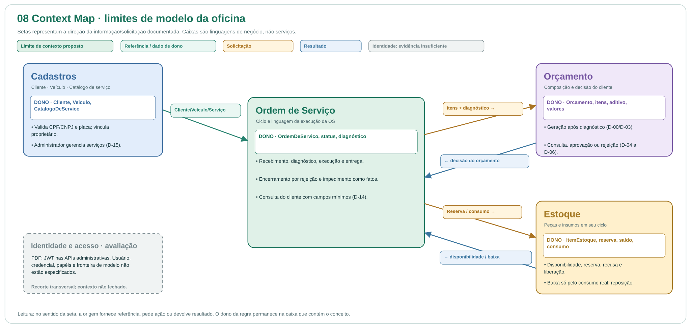

Use os diagramas abaixo para acompanhar o fluxo. Baixar arquivo Excalidraw editável
Fluxo principal

Relações entre Cadastros, Ordem de Serviço, Orçamento e Estoque.
Use os diagramas abaixo para acompanhar o fluxo. Baixar arquivo Excalidraw editável
